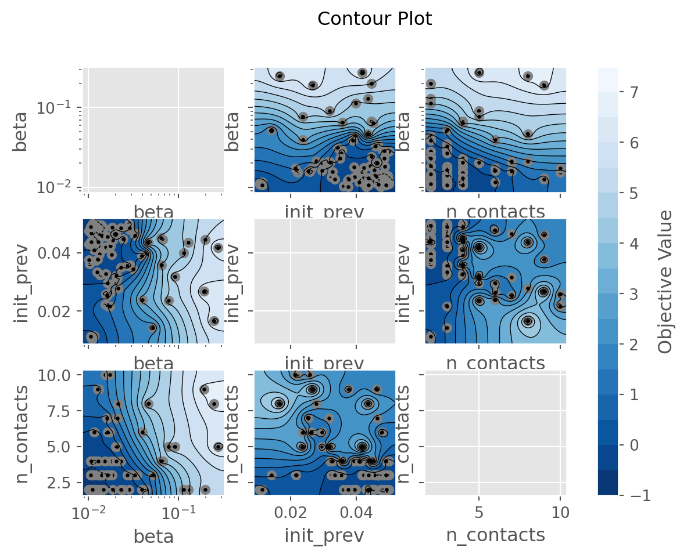

##%% Imports and settings
import sciris as sc
import starsim as ss
import numpy as np
import pandas as pd
import matplotlib.dates as mdates
n_agents = 2e3
debug = False # If true, will run in serialCalibration
Disease models typically require contextualization to a relevant setting of interest prior to addressing “what-if” scenario questions. The process of tuning model input parameters so that model outputs match observed data is known as calibration. There are many approaches to model calibration, ranging from manual tuning to fully Bayesian methods.
For many applications, we have found that an optimization-based approach is sufficient. Such methods avoid the tedious process of manual tuning and are less computationally expensive than fully Bayesian methods. One such optimization-based approach is the Optuna library, which is a Bayesian hyperparameter optimization framework. Optuna is designed for tuning hyperparameters of machine learning models, but it can also be used to calibrate disease models.
Calibration libraries often treat the disease model as a black box, where the input parameters are the “hyperparameters” to be tuned. The calibration process is often iterative and requires a combination of expert knowledge and computational tools. The optimization algorithm iteratively chooses new parameter values to evaluate, and the model is run with these values to generate outputs. The outputs are compared to observed data, and a loss function is calculated to quantify the difference between the model outputs and the observed data. The optimization algorithm then uses this loss function to update its search strategy and choose new parameter values to evaluate. This process continues until the algorithm converges to a set of parameter values that minimize the loss function.
While many optimization algorithms are available, Starsim has a built-in interface to the Optuna library, which we will demonstrate in this guide. We will use a simple Susceptible-Infected-Recovered (SIR) model as an example. We will tune three input parameters, the infectivity parameter, beta, the initial prevalence parameter, init_prev, and the Poisson-distributed degree distribution parameter, n_contacts. We will calibrate the model using a beta-binomial likelihood function so as to match prevalence at three distinct time points.
We begin with a few imports and default settings:
The calibration class will require a base Sim object. This sim will later be modified according to parameters selected by the optimization engine. The following function creates the base Sim object.
def make_sim():
sir = ss.SIR(
beta = ss.peryear(0.075),
init_prev = ss.bernoulli(0.02),
)
random = ss.RandomNet(n_contacts=ss.poisson(4))
sim = ss.Sim(
n_agents = n_agents,
start = ss.date('2020-01-01'),
stop = ss.date('2020-02-12'),
dt = ss.days(1),
diseases = sir,
networks = random,
verbose = 0,
)
return simNow let’s define the calibration parameters. These are the inputs that Optuna will be able to modify. Here, we define three such parameters, beta, init_prev, and n_contacts.
Each parameter entry should have range defined by low and high as well as a guess values. The guess value is not used by Optuna, rather only for a check after calibration completes to see if the new parameters are better than the guess values.
You’ll notice there are a few other parameters that can be specified. For example, the data type of the parameter appears in suggest_type. Possible values are listed in the Optuna documentation, and include suggest_float for float values and suggest_int for integer types.
To make things easier for the search algorithm, it’s helpful to indicate how outputs are expected to change with inputs. For example, increasing beta from 0.01 to 0.02 should double disease transmission, but increasing from 0.11 to 0.12 will have a small effect. Thus, we indicate that this parameter should be calibrated with log=True.
# Define the calibration parameters
calib_pars = dict(
beta = dict(low=0.01, high=0.30, guess=0.15, suggest_type='suggest_float', log=True), # Note the log scale
init_prev = dict(low=0.01, high=0.05, guess=0.15), # Default type is suggest_float, no need to re-specify
n_contacts = dict(low=2, high=10, guess=3, suggest_type='suggest_int'), # Suggest int just for this demo
)The optimization engine iteratively chooses input parameters to simulate. Those parameters are passed into the following build_sim function as a dictionary of calib_pars along with the base sim and any other key word arguments. The calib_pars will be as above, but importantly will have an additional key named value containing the value selected by Optuna.
When modifying a sim, it is important to realize that the simulation has not been initialized yet. Nonetheless, the configuration is available for modification at sim.pars, as demonstrated in the function below for the SIR example.
def build_sim(sim, calib_pars, n_reps=1, **kwargs):
"""
Modify the base simulation by applying calib_pars. The result can be a
single simulation or multiple simulations if n_reps>1. Note that here we are
simply building the simulation by modifying the base sim. Running the sims
and extracting results will be done by the calibration function.
"""
sir = sim.pars.diseases # There is only one disease in this simulation and it is a SIR
net = sim.pars.networks # There is only one network in this simulation and it is a RandomNet
for k, pars in calib_pars.items(): # Loop over the calibration parameters
if k == 'rand_seed':
sim.pars.rand_seed = v
continue
# Each item in calib_pars is a dictionary with keys like 'low', 'high',
# 'guess', 'suggest_type', and importantly 'value'. The 'value' key is
# the one we want to use as that's the one selected by the algorithm
v = pars['value']
if k == 'beta':
sir.pars.beta = ss.peryear(v)
elif k == 'init_prev':
sir.pars.init_prev = ss.bernoulli(v)
elif k == 'n_contacts':
net.pars.n_contacts = ss.poisson(v)
else:
raise NotImplementedError(f'Parameter {k} not recognized')
# If just one simulation per parameter set, return the single simulation
if n_reps == 1:
return sim
# But if you'd like to run multiple simulations with the same parameters, we return a MultiSim instead
# Note that each simulation will have a different random seed, you can set specific seeds if you like
# Also note that parallel=False and debug=True are important to avoid issues with parallelism in the calibration
# Advanced: If running multiple reps, you can choose if/how they are combined using the "combine_reps" argument to each CalibComponent, introduced below.
ms = ss.MultiSim(sim, iterpars=dict(rand_seed=np.random.randint(0, 1e6, n_reps)), initialize=True, debug=True, parallel=False)
return msThe Starsim framework has been integrated with the Optuna hyperparameter optimization algorithm to facilitate calibration through the Calibration class. Recall that an optimization-based approach to calibration minimizes a function of the input parameters. This function is key to achieving an acceptable calibration.
There are two ways to describe the goodness-of-fit function for the Calibration. The first method is to directly provide a function that the algorithm will call. The eval_fn will be passed each completed sim after running, and is expected to return a float representing the mismatch (lower is better as the optimization algorithm is configured to minimize). Data can be passed into the eval_fn via eval_kwargs.
As an alternative to directly specifying the evaluation function, you can use CalibComponents. Each component includes real data, for example from a survey, that is compared against simulation data from the model. Several components can be used at the same time, for example one for disease prevalence and another for treatment coverage. Each component computes a likelihood of the data given the input parameters, as assessed via simulation. Components are combined assuming independence.
The base class for a component is called CalibComponent, which you can use to define your own likelihood. However, we have provided components for several key likelihood functions including BetaBinomial, Binomial, DirichletMultinomial, GammaPoisson, and Normal. The Normal component is most like a traditional squared error. Each component takes in a name and a weight, which is used when combining log likelihoods.
Importantly, each component takes in the calibration target, the real data that was observed, in an argument called expected. This argument should be a Pandas Dataframe with one row per time point and columns that will depend on the specific component type. For example, the Binomial component requires columns of n (trials) and x (successes).
The components also handle extracting data from each simulation using the extract_fn argument. The value of this argument should be a function that takes in a simulation and returns a Pandas DataFrame. The specifics of the columns will depend a bit on the type of component (e.g. BetaBinomial is different from Normal), but often looks like a simulated version of expected. We will see examples below.
We’ll also see how to use the conform argument, the purpose of which is to temporally align the simulation output to the real data. This argument works along with the extract_fn to produce the final simulation outputs that are used in the likelihood function. The conformer is a function that takes in the expected data you provided and the actual simulation result the comes out of the extract_fn. The conformers we have built in are as follows:
step_containing: Conform by simply choosing the simulated timestep that contains the time indicated in the real data (expected)prevalent: Interpolate the simulated timepoints to estimate the values that would have occurred at each real timepointincident: While the two methods above capture the state of the model at a particular point in time (stocks), this component allows you to capture the behavior of the model over time (flows). Instead of just giving one time value,t, you’ll provide a second time value as well calledt1. This conformer will add up events occurring between the two time points.
Let’s make a Binomial component, as might be used to calibrate disease prevalence.
prevalence = ss.Normal(
name = 'Disease prevalence',
conform = 'prevalent',
expected = pd.DataFrame({
'x': [0.13, 0.16, 0.06], # Prevalence of infection
}, index=pd.Index([ss.date(d) for d in ['2020-01-12', '2020-01-25', '2020-02-02']], name='t')), # On these dates
extract_fn = lambda sim: pd.DataFrame({
'x': sim.results.sir.prevalence,
}, index=pd.Index(sim.results.timevec, name='t')),
# You can specify the variance as well, but it's optional (max likelihood estimates will be used if not provided)
# This could be a single float or an array with the same shape as the expected values
sigma2 = 0.05, # e.g. (num_replicates/sigma2_model + 1/sigma2_data)^-1
#sigma2 = np.array([0.05, 0.25, 0.01])
)Finally, we can bring all the pieces together. We make a single base simulation and create an instance of a Starsim Calibration object. This object requires a few arguments, like the calib_pars and sim. We also pass in the function that modifies the base sim, here our build_sim function. No additional build_kw are required in this example.
We also pass in a list of components. Instead of using this “component-based” system, a user could simply provide an eval_fn, which takes in a completed sim an any eval_kwargs and returns a “mismatch” score to be minimized.
We can also specify the total number of trials to run, the number of parallel works, and a few other parameters.
sc.heading('Beginning calibration')
# Make the sim and data
sim = make_sim()
# Make the calibration
calib = ss.Calibration(
calib_pars = calib_pars,
sim = sim,
build_fn = build_sim,
build_kw = dict(n_reps=3), # Run 3 replicates for each parameter set
reseed = True, # If true, a different random seed will be provided to each configuration
components = [prevalence],
total_trials = 100,
n_workers = None, # None indicates to use all available CPUs
die = True,
debug = debug, # Run in serial if True
)
# Perform the calibration
sc.printcyan('\nPeforming calibration...')
calib.calibrate();————————————————————— Beginning calibration ————————————————————— Peforming calibration... Removed existing calibration file starsim_calibration.db sqlite:///starsim_calibration.db
[I 2025-08-03 02:43:26,788] A new study created in RDB with name: starsim_calibration
[I 2025-08-03 02:43:28,166] Trial 1 finished with value: -0.4523803813501005 and parameters: {'beta': 0.033599059027930485, 'init_prev': 0.014081483521692757, 'n_contacts': 2, 'rand_seed': 104904}. Best is trial 1 with value: -0.4523803813501005.
[I 2025-08-03 02:43:28,266] Trial 6 finished with value: -0.512294825794545 and parameters: {'beta': 0.0793953138101092, 'init_prev': 0.04459865328947219, 'n_contacts': 2, 'rand_seed': 294353}. Best is trial 6 with value: -0.512294825794545.
[I 2025-08-03 02:43:28,350] Trial 10 finished with value: -0.5167609369056562 and parameters: {'beta': 0.06802271444523018, 'init_prev': 0.04726983416292729, 'n_contacts': 2, 'rand_seed': 28377}. Best is trial 10 with value: -0.5167609369056562.
[I 2025-08-03 02:43:28,368] Trial 4 finished with value: -0.45260565912787826 and parameters: {'beta': 0.26187455954961725, 'init_prev': 0.012598097541153238, 'n_contacts': 10, 'rand_seed': 616236}. Best is trial 10 with value: -0.5167609369056562.
[I 2025-08-03 02:43:28,604] Trial 3 finished with value: -0.4845248257945449 and parameters: {'beta': 0.06283455703154933, 'init_prev': 0.02938098683653425, 'n_contacts': 3, 'rand_seed': 330035}. Best is trial 10 with value: -0.5167609369056562.
[I 2025-08-03 02:43:28,631] Trial 16 finished with value: -0.5110845480167672 and parameters: {'beta': 0.13415286435081336, 'init_prev': 0.04283030635460599, 'n_contacts': 5, 'rand_seed': 367620}. Best is trial 10 with value: -0.5167609369056562.
[I 2025-08-03 02:43:28,768] Trial 8 finished with value: -0.4479331591278783 and parameters: {'beta': 0.0333406388455604, 'init_prev': 0.011248766938176735, 'n_contacts': 8, 'rand_seed': 879010}. Best is trial 10 with value: -0.5167609369056562.
[I 2025-08-03 02:43:28,802] Trial 7 finished with value: -0.46578815912787835 and parameters: {'beta': 0.1757024736168487, 'init_prev': 0.01872185611807929, 'n_contacts': 7, 'rand_seed': 228408}. Best is trial 10 with value: -0.5167609369056562.
[I 2025-08-03 02:43:28,804] Trial 9 finished with value: -0.46328482579454494 and parameters: {'beta': 0.18981877004398728, 'init_prev': 0.01830016821416193, 'n_contacts': 3, 'rand_seed': 270942}. Best is trial 10 with value: -0.5167609369056562.
[I 2025-08-03 02:43:28,804] Trial 2 finished with value: -0.4658326035723228 and parameters: {'beta': 0.03075118280818561, 'init_prev': 0.020401239096792263, 'n_contacts': 4, 'rand_seed': 81289}. Best is trial 10 with value: -0.5167609369056562.
[I 2025-08-03 02:43:28,825] Trial 0 finished with value: -0.49749010357232276 and parameters: {'beta': 0.05808373029846237, 'init_prev': 0.03602890476693134, 'n_contacts': 10, 'rand_seed': 870535}. Best is trial 10 with value: -0.5167609369056562.
[I 2025-08-03 02:43:28,861] Trial 12 finished with value: -0.5062784369056561 and parameters: {'beta': 0.09492529228469115, 'init_prev': 0.04174396434207639, 'n_contacts': 2, 'rand_seed': 77494}. Best is trial 10 with value: -0.5167609369056562.
[I 2025-08-03 02:43:28,892] Trial 14 finished with value: -0.5150259369056561 and parameters: {'beta': 0.09918665178697361, 'init_prev': 0.04466804651587767, 'n_contacts': 5, 'rand_seed': 150697}. Best is trial 10 with value: -0.5167609369056562.
[I 2025-08-03 02:43:28,896] Trial 19 finished with value: -0.4835317702389894 and parameters: {'beta': 0.026600483420479663, 'init_prev': 0.029249362172214098, 'n_contacts': 6, 'rand_seed': 93215}. Best is trial 10 with value: -0.5167609369056562.
[I 2025-08-03 02:43:28,901] Trial 11 finished with value: -0.4937612146834338 and parameters: {'beta': 0.20734764074573894, 'init_prev': 0.03264039883042884, 'n_contacts': 6, 'rand_seed': 518546}. Best is trial 10 with value: -0.5167609369056562.
[I 2025-08-03 02:43:29,006] Trial 13 finished with value: -0.4802814924612116 and parameters: {'beta': 0.013625390527388667, 'init_prev': 0.027002311473252195, 'n_contacts': 9, 'rand_seed': 695453}. Best is trial 10 with value: -0.5167609369056562.
[I 2025-08-03 02:43:29,021] Trial 21 finished with value: -0.47606371468343384 and parameters: {'beta': 0.01173781216465541, 'init_prev': 0.02599576603389301, 'n_contacts': 3, 'rand_seed': 597199}. Best is trial 10 with value: -0.5167609369056562.
[I 2025-08-03 02:43:29,057] Trial 18 finished with value: -0.5185959369056561 and parameters: {'beta': 0.0728895366128081, 'init_prev': 0.047662178059272496, 'n_contacts': 5, 'rand_seed': 546013}. Best is trial 18 with value: -0.5185959369056561.
[I 2025-08-03 02:43:29,085] Trial 20 finished with value: -0.4945420480167672 and parameters: {'beta': 0.283004014612792, 'init_prev': 0.03251761007422302, 'n_contacts': 7, 'rand_seed': 294822}. Best is trial 18 with value: -0.5185959369056561.
[I 2025-08-03 02:43:29,085] Trial 17 finished with value: -0.47510954801676714 and parameters: {'beta': 0.017207688679759286, 'init_prev': 0.02493600928174746, 'n_contacts': 9, 'rand_seed': 138513}. Best is trial 18 with value: -0.5185959369056561.
[I 2025-08-03 02:43:29,123] Trial 15 finished with value: -0.44716954801676717 and parameters: {'beta': 0.036566605036618835, 'init_prev': 0.010743193362091806, 'n_contacts': 10, 'rand_seed': 85178}. Best is trial 18 with value: -0.5185959369056561.
[I 2025-08-03 02:43:29,133] Trial 5 finished with value: -0.4816431591278783 and parameters: {'beta': 0.02919038672801163, 'init_prev': 0.028240901937932418, 'n_contacts': 5, 'rand_seed': 603104}. Best is trial 18 with value: -0.5185959369056561.
[I 2025-08-03 02:43:29,247] Trial 22 finished with value: -0.48306899246121165 and parameters: {'beta': 0.02556289818498224, 'init_prev': 0.029219460163803425, 'n_contacts': 9, 'rand_seed': 73702}. Best is trial 18 with value: -0.5185959369056561.
[I 2025-08-03 02:43:29,253] Trial 24 finished with value: -0.5094467702389894 and parameters: {'beta': 0.17528403735075693, 'init_prev': 0.04411427249680165, 'n_contacts': 7, 'rand_seed': 806209}. Best is trial 18 with value: -0.5185959369056561.
[I 2025-08-03 02:43:29,262] Trial 23 finished with value: -0.4656078813501005 and parameters: {'beta': 0.03689574465568517, 'init_prev': 0.020140815700882473, 'n_contacts': 2, 'rand_seed': 957631}. Best is trial 18 with value: -0.5185959369056561.
[I 2025-08-03 02:43:29,337] Trial 25 finished with value: -0.4804995480167672 and parameters: {'beta': 0.09916875970369468, 'init_prev': 0.02720244868439361, 'n_contacts': 8, 'rand_seed': 128215}. Best is trial 18 with value: -0.5185959369056561.
[I 2025-08-03 02:43:29,383] Trial 27 finished with value: -0.5126012146834338 and parameters: {'beta': 0.011212961081569274, 'init_prev': 0.04869259054259416, 'n_contacts': 5, 'rand_seed': 553431}. Best is trial 18 with value: -0.5185959369056561.
[I 2025-08-03 02:43:29,406] Trial 30 finished with value: -0.5137581591278783 and parameters: {'beta': 0.011062701602757715, 'init_prev': 0.04908430249950206, 'n_contacts': 4, 'rand_seed': 20522}. Best is trial 18 with value: -0.5185959369056561.
[I 2025-08-03 02:43:29,582] Trial 33 finished with value: -0.515725936905656 and parameters: {'beta': 0.11092559335998549, 'init_prev': 0.04891168918532285, 'n_contacts': 5, 'rand_seed': 185012}. Best is trial 18 with value: -0.5185959369056561.
[I 2025-08-03 02:43:29,680] Trial 32 finished with value: -0.5163934369056561 and parameters: {'beta': 0.11550443434126173, 'init_prev': 0.04941350553805009, 'n_contacts': 5, 'rand_seed': 19857}. Best is trial 18 with value: -0.5185959369056561.
[I 2025-08-03 02:43:29,708] Trial 26 finished with value: -0.495719825794545 and parameters: {'beta': 0.01005557980178339, 'init_prev': 0.03746295677666766, 'n_contacts': 6, 'rand_seed': 17666}. Best is trial 18 with value: -0.5185959369056561.
[I 2025-08-03 02:43:29,723] Trial 29 finished with value: -0.5159339924612116 and parameters: {'beta': 0.10876608296816245, 'init_prev': 0.04919750393957824, 'n_contacts': 6, 'rand_seed': 532860}. Best is trial 18 with value: -0.5185959369056561.
[I 2025-08-03 02:43:29,755] Trial 35 finished with value: -0.5163934369056561 and parameters: {'beta': 0.11261759027427089, 'init_prev': 0.049580226349305076, 'n_contacts': 5, 'rand_seed': 464943}. Best is trial 18 with value: -0.5185959369056561.
[I 2025-08-03 02:43:29,770] Trial 37 finished with value: -0.5164820480167672 and parameters: {'beta': 0.09803731085117036, 'init_prev': 0.049818028846687706, 'n_contacts': 5, 'rand_seed': 1676}. Best is trial 18 with value: -0.5185959369056561.
[I 2025-08-03 02:43:29,887] Trial 28 finished with value: -0.5147576035723228 and parameters: {'beta': 0.10917895073434729, 'init_prev': 0.04921603654753239, 'n_contacts': 4, 'rand_seed': 18915}. Best is trial 18 with value: -0.5185959369056561.
[I 2025-08-03 02:43:29,968] Trial 40 finished with value: -0.5153370480167672 and parameters: {'beta': 0.11566375467848491, 'init_prev': 0.04968492170567079, 'n_contacts': 4, 'rand_seed': 435730}. Best is trial 18 with value: -0.5185959369056561.
[I 2025-08-03 02:43:29,969] Trial 31 finished with value: -0.49865788135010053 and parameters: {'beta': 0.1363947018246782, 'init_prev': 0.03750332342400133, 'n_contacts': 5, 'rand_seed': 9387}. Best is trial 18 with value: -0.5185959369056561.
[I 2025-08-03 02:43:29,977] Trial 39 finished with value: -0.5150495480167671 and parameters: {'beta': 0.11160322113643391, 'init_prev': 0.04874277236482108, 'n_contacts': 5, 'rand_seed': 429951}. Best is trial 18 with value: -0.5185959369056561.
[I 2025-08-03 02:43:29,977] Trial 34 finished with value: -0.5161737146834338 and parameters: {'beta': 0.10268257155763501, 'init_prev': 0.04925238417417331, 'n_contacts': 5, 'rand_seed': 20761}. Best is trial 18 with value: -0.5185959369056561.
[I 2025-08-03 02:43:30,096] Trial 36 finished with value: -0.5143328813501005 and parameters: {'beta': 0.09756244647531835, 'init_prev': 0.04970459717017487, 'n_contacts': 5, 'rand_seed': 441501}. Best is trial 18 with value: -0.5185959369056561.
[I 2025-08-03 02:43:30,118] Trial 42 finished with value: -0.5137301035723226 and parameters: {'beta': 0.09821829184056652, 'init_prev': 0.04959158300836428, 'n_contacts': 4, 'rand_seed': 856}. Best is trial 18 with value: -0.5185959369056561.
[I 2025-08-03 02:43:30,124] Trial 43 finished with value: -0.5125862146834339 and parameters: {'beta': 0.048538440030680564, 'init_prev': 0.04912923954613954, 'n_contacts': 4, 'rand_seed': 410378}. Best is trial 18 with value: -0.5185959369056561.
[I 2025-08-03 02:43:30,144] Trial 38 finished with value: -0.514767325794545 and parameters: {'beta': 0.10144429478779605, 'init_prev': 0.04962885567857979, 'n_contacts': 5, 'rand_seed': 6178}. Best is trial 18 with value: -0.5185959369056561.
[I 2025-08-03 02:43:30,150] Trial 44 finished with value: -0.5142092702389894 and parameters: {'beta': 0.0481861169480341, 'init_prev': 0.04950014203820899, 'n_contacts': 4, 'rand_seed': 421885}. Best is trial 18 with value: -0.5185959369056561.
[I 2025-08-03 02:43:30,158] Trial 41 finished with value: -0.5141762146834338 and parameters: {'beta': 0.11173489643901627, 'init_prev': 0.04979549125122733, 'n_contacts': 4, 'rand_seed': 432270}. Best is trial 18 with value: -0.5185959369056561.
[I 2025-08-03 02:43:30,159] Trial 47 finished with value: -0.493733436905656 and parameters: {'beta': 0.046491777187172664, 'init_prev': 0.03888059521835074, 'n_contacts': 4, 'rand_seed': 411317}. Best is trial 18 with value: -0.5185959369056561.
[I 2025-08-03 02:43:30,197] Trial 45 finished with value: -0.5130739924612118 and parameters: {'beta': 0.04485011629394221, 'init_prev': 0.04946145964239639, 'n_contacts': 4, 'rand_seed': 426947}. Best is trial 18 with value: -0.5185959369056561.
[I 2025-08-03 02:43:30,360] Trial 48 finished with value: -0.49456760357232277 and parameters: {'beta': 0.04855979527450169, 'init_prev': 0.039764966049686414, 'n_contacts': 4, 'rand_seed': 418406}. Best is trial 18 with value: -0.5185959369056561.
[I 2025-08-03 02:43:30,363] Trial 46 finished with value: -0.49456760357232277 and parameters: {'beta': 0.046450463478627475, 'init_prev': 0.03965822623438591, 'n_contacts': 4, 'rand_seed': 412929}. Best is trial 18 with value: -0.5185959369056561.
[I 2025-08-03 02:43:30,382] Trial 52 finished with value: -0.493733436905656 and parameters: {'beta': 0.04884872654328735, 'init_prev': 0.03857308608602975, 'n_contacts': 4, 'rand_seed': 699993}. Best is trial 18 with value: -0.5185959369056561.
[I 2025-08-03 02:43:30,417] Trial 50 finished with value: -0.4956464924612117 and parameters: {'beta': 0.05443323839410096, 'init_prev': 0.04038615694795923, 'n_contacts': 4, 'rand_seed': 404889}. Best is trial 18 with value: -0.5185959369056561.
[I 2025-08-03 02:43:30,446] Trial 53 finished with value: -0.4956464924612117 and parameters: {'beta': 0.05127163498517689, 'init_prev': 0.04052314051854252, 'n_contacts': 4, 'rand_seed': 412502}. Best is trial 18 with value: -0.5185959369056561.
[I 2025-08-03 02:43:30,549] Trial 49 finished with value: -0.49456760357232277 and parameters: {'beta': 0.04956124892746006, 'init_prev': 0.03964725416273138, 'n_contacts': 4, 'rand_seed': 403891}. Best is trial 18 with value: -0.5185959369056561.
[I 2025-08-03 02:43:30,624] Trial 54 finished with value: -0.4951153813501005 and parameters: {'beta': 0.049232828139594724, 'init_prev': 0.0400173538155452, 'n_contacts': 4, 'rand_seed': 402556}. Best is trial 18 with value: -0.5185959369056561.
[I 2025-08-03 02:43:30,682] Trial 51 finished with value: -0.49483565912787836 and parameters: {'beta': 0.04887224765802595, 'init_prev': 0.03983580787155544, 'n_contacts': 4, 'rand_seed': 469378}. Best is trial 18 with value: -0.5185959369056561.
[I 2025-08-03 02:43:30,689] Trial 56 finished with value: -0.5063009369056561 and parameters: {'beta': 0.054174562925866095, 'init_prev': 0.04609744220310713, 'n_contacts': 3, 'rand_seed': 671561}. Best is trial 18 with value: -0.5185959369056561.
[I 2025-08-03 02:43:31,097] Trial 68 finished with value: -0.5164812146834339 and parameters: {'beta': 0.06828394756281905, 'init_prev': 0.046468039231811295, 'n_contacts': 3, 'rand_seed': 202082}. Best is trial 18 with value: -0.5185959369056561.
[I 2025-08-03 02:43:31,098] Trial 55 finished with value: -0.49521843690565615 and parameters: {'beta': 0.05646329546950527, 'init_prev': 0.04033195251344551, 'n_contacts': 3, 'rand_seed': 216210}. Best is trial 18 with value: -0.5185959369056561.
[I 2025-08-03 02:43:31,099] Trial 62 finished with value: -0.5164812146834339 and parameters: {'beta': 0.06603077070649348, 'init_prev': 0.046398362476012305, 'n_contacts': 3, 'rand_seed': 668972}. Best is trial 18 with value: -0.5185959369056561.
[I 2025-08-03 02:43:31,114] Trial 59 finished with value: -0.5166887146834339 and parameters: {'beta': 0.06970723104922676, 'init_prev': 0.04671670373279515, 'n_contacts': 3, 'rand_seed': 739736}. Best is trial 18 with value: -0.5185959369056561.
[I 2025-08-03 02:43:31,435] Trial 66 finished with value: -0.5164812146834339 and parameters: {'beta': 0.06928243223604393, 'init_prev': 0.046433757253196754, 'n_contacts': 3, 'rand_seed': 743320}. Best is trial 18 with value: -0.5185959369056561.
[I 2025-08-03 02:43:31,443] Trial 65 finished with value: -0.5162687146834338 and parameters: {'beta': 0.06949538800942746, 'init_prev': 0.04621312447107637, 'n_contacts': 3, 'rand_seed': 722974}. Best is trial 18 with value: -0.5185959369056561.
[I 2025-08-03 02:43:31,458] Trial 75 finished with value: -0.5170595480167672 and parameters: {'beta': 0.07502254242923803, 'init_prev': 0.04667285923298559, 'n_contacts': 6, 'rand_seed': 201276}. Best is trial 18 with value: -0.5185959369056561.
[I 2025-08-03 02:43:31,575] Trial 60 finished with value: -0.5160545480167672 and parameters: {'beta': 0.07126477161653726, 'init_prev': 0.04613148863033321, 'n_contacts': 3, 'rand_seed': 717925}. Best is trial 18 with value: -0.5185959369056561.
[I 2025-08-03 02:43:31,591] Trial 64 finished with value: -0.5155906591278783 and parameters: {'beta': 0.06254437289751809, 'init_prev': 0.045934090704793235, 'n_contacts': 3, 'rand_seed': 698328}. Best is trial 18 with value: -0.5185959369056561.
[I 2025-08-03 02:43:31,621] Trial 72 finished with value: -0.5166887146834339 and parameters: {'beta': 0.07031899372961192, 'init_prev': 0.046576490227149124, 'n_contacts': 3, 'rand_seed': 195868}. Best is trial 18 with value: -0.5185959369056561.
[I 2025-08-03 02:43:31,688] Trial 71 finished with value: -0.5162687146834338 and parameters: {'beta': 0.07114293322898473, 'init_prev': 0.04629370152246623, 'n_contacts': 3, 'rand_seed': 51748}. Best is trial 18 with value: -0.5185959369056561.
[I 2025-08-03 02:43:31,710] Trial 67 finished with value: -0.5160545480167672 and parameters: {'beta': 0.06393354890231566, 'init_prev': 0.046143229883845484, 'n_contacts': 3, 'rand_seed': 223655}. Best is trial 18 with value: -0.5185959369056561.
[I 2025-08-03 02:43:31,770] Trial 57 finished with value: -0.5065389924612116 and parameters: {'beta': 0.05557245153853663, 'init_prev': 0.04636247869356728, 'n_contacts': 3, 'rand_seed': 719135}. Best is trial 18 with value: -0.5185959369056561.
[I 2025-08-03 02:43:31,806] Trial 74 finished with value: -0.5162687146834338 and parameters: {'beta': 0.06814162053759644, 'init_prev': 0.04625411642263612, 'n_contacts': 3, 'rand_seed': 206749}. Best is trial 18 with value: -0.5185959369056561.
[I 2025-08-03 02:43:31,852] Trial 63 finished with value: -0.5069567702389894 and parameters: {'beta': 0.07531912731209227, 'init_prev': 0.04612686373502757, 'n_contacts': 3, 'rand_seed': 658311}. Best is trial 18 with value: -0.5185959369056561.
[I 2025-08-03 02:43:31,889] Trial 58 finished with value: -0.5069567702389894 and parameters: {'beta': 0.06073091732848228, 'init_prev': 0.04634747498706715, 'n_contacts': 3, 'rand_seed': 697437}. Best is trial 18 with value: -0.5185959369056561.
[I 2025-08-03 02:43:31,898] Trial 61 finished with value: -0.5162687146834338 and parameters: {'beta': 0.07484430153133027, 'init_prev': 0.046250473789300056, 'n_contacts': 3, 'rand_seed': 717565}. Best is trial 18 with value: -0.5185959369056561.
[I 2025-08-03 02:43:31,983] Trial 76 finished with value: -0.510013436905656 and parameters: {'beta': 0.08470203874633477, 'init_prev': 0.04306789139368102, 'n_contacts': 2, 'rand_seed': 262983}. Best is trial 18 with value: -0.5185959369056561.
[I 2025-08-03 02:43:32,044] Trial 70 finished with value: -0.5178428813501005 and parameters: {'beta': 0.07294778881858056, 'init_prev': 0.04698255613222289, 'n_contacts': 3, 'rand_seed': 220326}. Best is trial 18 with value: -0.5185959369056561.
[I 2025-08-03 02:43:32,061] Trial 73 finished with value: -0.5166423257945449 and parameters: {'beta': 0.07970909736956476, 'init_prev': 0.04634002346794642, 'n_contacts': 6, 'rand_seed': 48004}. Best is trial 18 with value: -0.5185959369056561.
[I 2025-08-03 02:43:32,069] Trial 69 finished with value: -0.5166887146834339 and parameters: {'beta': 0.07524922546202444, 'init_prev': 0.04651068761891555, 'n_contacts': 3, 'rand_seed': 237530}. Best is trial 18 with value: -0.5185959369056561.
[I 2025-08-03 02:43:32,121] Trial 79 finished with value: -0.509294825794545 and parameters: {'beta': 0.0892774241854393, 'init_prev': 0.042490609890882956, 'n_contacts': 2, 'rand_seed': 822974}. Best is trial 18 with value: -0.5185959369056561.
[I 2025-08-03 02:43:32,122] Trial 78 finished with value: -0.512333436905656 and parameters: {'beta': 0.08260914788150717, 'init_prev': 0.04467794003986164, 'n_contacts': 2, 'rand_seed': 257130}. Best is trial 18 with value: -0.5185959369056561.
[I 2025-08-03 02:43:32,168] Trial 77 finished with value: -0.5107081591278783 and parameters: {'beta': 0.0866335540435343, 'init_prev': 0.043803934379322125, 'n_contacts': 2, 'rand_seed': 795671}. Best is trial 18 with value: -0.5185959369056561.
[I 2025-08-03 02:43:32,404] Trial 83 finished with value: -0.509294825794545 and parameters: {'beta': 0.08552147656805893, 'init_prev': 0.04300925288555135, 'n_contacts': 2, 'rand_seed': 266021}. Best is trial 18 with value: -0.5185959369056561.
[I 2025-08-03 02:43:32,414] Trial 82 finished with value: -0.5109467702389894 and parameters: {'beta': 0.08523230362521769, 'init_prev': 0.04382816456676468, 'n_contacts': 2, 'rand_seed': 252298}. Best is trial 18 with value: -0.5185959369056561.
[I 2025-08-03 02:43:32,454] Trial 80 finished with value: -0.509294825794545 and parameters: {'beta': 0.08478003487874931, 'init_prev': 0.042841912845218336, 'n_contacts': 2, 'rand_seed': 243880}. Best is trial 18 with value: -0.5185959369056561.
[I 2025-08-03 02:43:32,497] Trial 81 finished with value: -0.5102537146834338 and parameters: {'beta': 0.0856449815474035, 'init_prev': 0.04343522151154269, 'n_contacts': 2, 'rand_seed': 273217}. Best is trial 18 with value: -0.5185959369056561.
[I 2025-08-03 02:43:32,498] Trial 85 finished with value: -0.5107081591278783 and parameters: {'beta': 0.08350969596203227, 'init_prev': 0.04373694463727692, 'n_contacts': 2, 'rand_seed': 252593}. Best is trial 18 with value: -0.5185959369056561.
[I 2025-08-03 02:43:32,499] Trial 84 finished with value: -0.5107439924612116 and parameters: {'beta': 0.07782147040626154, 'init_prev': 0.04318069974359375, 'n_contacts': 2, 'rand_seed': 264778}. Best is trial 18 with value: -0.5185959369056561.
[I 2025-08-03 02:43:32,650] Trial 87 finished with value: -0.509294825794545 and parameters: {'beta': 0.08602883643321173, 'init_prev': 0.042970571350627186, 'n_contacts': 2, 'rand_seed': 332394}. Best is trial 18 with value: -0.5185959369056561.
[I 2025-08-03 02:43:32,667] Trial 93 finished with value: -0.5176478813501005 and parameters: {'beta': 0.08671659458312991, 'init_prev': 0.04779246400713672, 'n_contacts': 2, 'rand_seed': 336475}. Best is trial 18 with value: -0.5185959369056561.
[I 2025-08-03 02:43:32,679] Trial 86 finished with value: -0.5112051035723227 and parameters: {'beta': 0.08601703080089167, 'init_prev': 0.043465569736679074, 'n_contacts': 2, 'rand_seed': 307876}. Best is trial 18 with value: -0.5185959369056561.
[I 2025-08-03 02:43:32,689] Trial 92 finished with value: -0.5114231591278783 and parameters: {'beta': 0.08765087833244486, 'init_prev': 0.043576520393043224, 'n_contacts': 2, 'rand_seed': 267951}. Best is trial 18 with value: -0.5185959369056561.
[I 2025-08-03 02:43:32,715] Trial 89 finished with value: -0.5188951035723226 and parameters: {'beta': 0.08547940822972985, 'init_prev': 0.04774702313945478, 'n_contacts': 2, 'rand_seed': 309951}. Best is trial 89 with value: -0.5188951035723226.
[I 2025-08-03 02:43:32,810] Trial 88 finished with value: -0.509294825794545 and parameters: {'beta': 0.08482879881318331, 'init_prev': 0.04253133582323154, 'n_contacts': 2, 'rand_seed': 258902}. Best is trial 89 with value: -0.5188951035723226.
[I 2025-08-03 02:43:32,822] Trial 95 finished with value: -0.5194301035723228 and parameters: {'beta': 0.1334844044014848, 'init_prev': 0.04800733143027654, 'n_contacts': 7, 'rand_seed': 149077}. Best is trial 95 with value: -0.5194301035723228.
[I 2025-08-03 02:43:32,847] Trial 90 finished with value: -0.5109467702389894 and parameters: {'beta': 0.08573595746924176, 'init_prev': 0.04409574440542772, 'n_contacts': 2, 'rand_seed': 257697}. Best is trial 95 with value: -0.5194301035723228.
[I 2025-08-03 02:43:32,851] Trial 94 finished with value: -0.5190753813501005 and parameters: {'beta': 0.0890674845602085, 'init_prev': 0.048006911728187246, 'n_contacts': 6, 'rand_seed': 113698}. Best is trial 95 with value: -0.5194301035723228.
[I 2025-08-03 02:43:32,886] Trial 91 finished with value: -0.5090512146834338 and parameters: {'beta': 0.08557806499358164, 'init_prev': 0.04225528553303842, 'n_contacts': 2, 'rand_seed': 321385}. Best is trial 95 with value: -0.5194301035723228.
[I 2025-08-03 02:43:33,063] Trial 96 finished with value: -0.5137326035723228 and parameters: {'beta': 0.09365305437798703, 'init_prev': 0.044925434072219946, 'n_contacts': 6, 'rand_seed': 116087}. Best is trial 95 with value: -0.5194301035723228.
[I 2025-08-03 02:43:33,209] Trial 97 finished with value: -0.5196267702389893 and parameters: {'beta': 0.12422981200945031, 'init_prev': 0.047738192874128525, 'n_contacts': 6, 'rand_seed': 164257}. Best is trial 97 with value: -0.5196267702389893.
[I 2025-08-03 02:43:33,217] Trial 98 finished with value: -0.5194512146834339 and parameters: {'beta': 0.12752392167936893, 'init_prev': 0.047545358586855664, 'n_contacts': 6, 'rand_seed': 163975}. Best is trial 97 with value: -0.5196267702389893.
[I 2025-08-03 02:43:33,237] Trial 99 finished with value: -0.5181676035723228 and parameters: {'beta': 0.05914783589607578, 'init_prev': 0.047295730243696106, 'n_contacts': 6, 'rand_seed': 358949}. Best is trial 97 with value: -0.5196267702389893.Making results structure...
Processed 100 trials; 0 failed
Best pars: {'beta': 0.12422981200945031, 'init_prev': 0.047738192874128525, 'n_contacts': 6, 'rand_seed': 164257}
Removed existing calibration file starsim_calibration.dbLet’s look at the best parameters that were found. Note that the rand_seed was selected at random, but the other parameters are meaningful.
calib.best_pars{'beta': 0.12422981200945031,
'init_prev': 0.047738192874128525,
'n_contacts': 6,
'rand_seed': 164257}Once the calibration is complete, we can compare the guess values to the best values found by calling check_fit.
# Confirm - Note the comparison is here configured over n_reps=15 replicates
sc.printcyan('\nConfirming fit...')
# Increase replicates to 15 for more representative results when running check_fit
calib.build_kw['n_reps'] = 15
calib.check_fit(do_plot=False)Confirming fit... Checking fit... Fit with original pars: -0.5456331591278782 Fit with best-fit pars: -0.5143657702389894 ✗ Calibration did not improve fit as the objective got worse (-0.5456331591278782 --> -0.5143657702389894), but this sometimes happens stochastically and is not necessarily an error
FalseAfter calling check_fit, we can plot the results. This first plot shows the Normal likelihood distributions from each of the 15 simulations we did in check_fit as the colored lines. The vertical dashed line is located at the real (expected) data. Top row is the “guess” values and the bottom row is the new “best” parameters. We want the vertical dashed line to cross the Gaussians at high points, representing high likelihood.
calib.plot();
Another way to plot the results is via bootstrapping. Here we repeatedly choose 15 from the n_reps=15 simulations (with replacement), compute the average (or sum for some components), and repeatedly calculate the mean. We then plot the distribution of means, and hope it lands near the vertical dashed lines representing the real data.
calib.plot(bootstrap=True); # Pass bootstrap=True to produce this plot
We can view some plots of the final fitted results. Whereas the two plots above were from the check_fit, running both “guess” and “best” parameters, here we make make new simulations to visualize the results.
g = calib.plot_final(); # Run the model for build_kw['n_reps'] = 15 replicates
calib<starsim.calibration.Calibration at 0x7a1a71d5f170>
[<class 'starsim.calibration.Calibration'>, <class 'sciris.sc_printing.prettyobj'>]
————————————————————————————————————————————————————————————————————————
Methods:
_eval_fit() make_study() run_sim()
_sample_from_trial() parse_study() run_trial()
build_fn() plot() run_workers()
calibrate() plot_final() to_df()
check_fit() plot_optuna() to_json()
eval_fn() remove_db() worker()
————————————————————————————————————————————————————————————————————————
after_fits: -0.5143657702389894
after_msim: MultiSim(n_sims: 15; base: Sim(n=2000;
2020.01.01—2020.02.12; not ini [...]
before_fits: -0.5456331591278782
before_msim: MultiSim(n_sims: 15; base: Sim(n=2000;
2020.01.01—2020.02.12; not ini [...]
best_pars: {'beta': 0.12422981200945031, 'init_prev':
0.047738192874128525, 'n_c [...]
build_fn: <function build_sim at 0x7a1a71b63f60>
build_kw: {'n_reps': 15}
calib_pars: {'beta': {'low': 0.01, 'high': 0.3, 'guess': 0.15,
'suggest_type': 's [...]
calibrated: True
components: [Calibration component with name Disease prevalence]
df: index mismatch beta init_prev n_contacts
rand_seed
97 [...]
die: True
elapsed: 6.927138805389404
eval_fn: <bound method Calibration._eval_fit of
<starsim.calibration.Calibrati [...]
eval_kw: {}
label: None
prune_fn: None
reseed: True
run_args: #0. 'n_trials': 5
#1. 'n_workers': 20
#2. 'debug': False
# [...]
sim: Sim(n=2000; 2020.01.01—2020.02.12; not initialized)
study: <optuna.study.study.Study object at 0x7a1a70e12b40>
study_data: #0. 'index': [0, 1, 2, 3, 4, 5, 6, 7, 8, 9, 10, 11,
12, 13, 14, [...]
verbose: True
————————————————————————————————————————————————————————————————————————Optuna has lots of diagnostic plots that we can explore. Possible plots include:
- plot_contour
- plot_edf
- plot_hypervolume_history
- plot_intermediate_values
- plot_optimization_history
- plot_parallel_coordinate
- plot_param_importances
- plot_pareto_front
- plot_rank
- plot_slice
- plot_terminator_improvement
- plot_timeline
Here are some examples:
calib.plot_optuna('plot_optimization_history'); # Plot the optimization history/home/cliffk/idm/starsim/starsim/calibration.py:433: ExperimentalWarning: plot_optimization_history is experimental (supported from v2.2.0). The interface can change in the future.
fig = getattr(vis, method)(self.study)
calib.plot_optuna('plot_contour');/home/cliffk/idm/starsim/starsim/calibration.py:433: ExperimentalWarning: plot_contour is experimental (supported from v2.2.0). The interface can change in the future.
fig = getattr(vis, method)(self.study)
[W 2025-08-03 02:43:43,130] Output figures of this Matplotlib-based `plot_contour` function would be different from those of the Plotly-based `plot_contour`.
calib.plot_optuna('plot_param_importances');Could not run plot_param_importances: Tried to import 'sklearn' but failed. Please make sure that the package is installed correctly to use this feature. Actual error: No module named 'sklearn'./home/cliffk/idm/starsim/starsim/calibration.py:433: ExperimentalWarning: plot_param_importances is experimental (supported from v2.2.0). The interface can change in the future.
fig = getattr(vis, method)(self.study)If you choose not to use components, you can always create your own mismatch function, as in the following example:
my_data = (ss.date('2020-01-12'), 0.13)
def eval(sim, expected):
# Compute the squared error at one point in time.
# expected will contain my_data in this example due to eval_kw
date, p = expected
if not isinstance(sim, ss.MultiSim):
sim = ss.MultiSim(sims=[sim])
ret = 0
for s in sim.sims:
ind = np.searchsorted(s.results.timevec, date, side='left')
prev = s.results.sir.prevalence[ind]
ret += (prev - p)**2
return ret
# Define the calibration parameters
calib_pars = dict(
beta = dict(low=0.01, high=0.30, guess=0.15, suggest_type='suggest_float', log=True),
)
# Make the sim and data
sim = make_sim()
# Make the calibration
calib = ss.Calibration(
calib_pars = calib_pars,
sim = sim,
build_fn = build_sim,
build_kw = dict(n_reps=2), # Two reps per point
reseed = True,
eval_fn = eval, # Will call my_function(msim, eval_kwargs)
eval_kw = dict(expected=my_data), # Will call eval(sim, **eval_kw)
total_trials = 20,
n_workers = None, # None indicates to use all available CPUs
die = True,
debug = debug,
)
# Perform the calibration
sc.printcyan('\nPeforming calibration...')
calib.calibrate()
# Check
calib.check_fit()[I 2025-08-03 02:43:44,852] A new study created in RDB with name: starsim_calibration
Peforming calibration...
Removed existing calibration file starsim_calibration.db
sqlite:///starsim_calibration.db
[I 2025-08-03 02:43:45,428] Trial 0 finished with value: 0.022367250000000005 and parameters: {'beta': 0.10103927205901043, 'rand_seed': 933269}. Best is trial 0 with value: 0.022367250000000005.
[I 2025-08-03 02:43:45,435] Trial 1 finished with value: 0.022367250000000005 and parameters: {'beta': 0.04366093063193488, 'rand_seed': 149399}. Best is trial 0 with value: 0.022367250000000005.
[I 2025-08-03 02:43:45,440] Trial 4 finished with value: 0.022367250000000005 and parameters: {'beta': 0.021093461746296133, 'rand_seed': 224596}. Best is trial 0 with value: 0.022367250000000005.
[I 2025-08-03 02:43:45,498] Trial 3 finished with value: 0.022261000000000003 and parameters: {'beta': 0.2644368969604749, 'rand_seed': 878827}. Best is trial 3 with value: 0.022261000000000003.
[I 2025-08-03 02:43:45,514] Trial 7 finished with value: 0.022367250000000005 and parameters: {'beta': 0.028169188890176784, 'rand_seed': 366328}. Best is trial 3 with value: 0.022261000000000003.
[I 2025-08-03 02:43:45,567] Trial 8 finished with value: 0.022367250000000005 and parameters: {'beta': 0.13178581237406475, 'rand_seed': 494524}. Best is trial 3 with value: 0.022261000000000003.
[I 2025-08-03 02:43:45,585] Trial 5 finished with value: 0.022367250000000005 and parameters: {'beta': 0.016675079106513134, 'rand_seed': 538373}. Best is trial 3 with value: 0.022261000000000003.
[I 2025-08-03 02:43:45,613] Trial 2 finished with value: 0.022367250000000005 and parameters: {'beta': 0.09189892227481376, 'rand_seed': 727823}. Best is trial 3 with value: 0.022261000000000003.
[I 2025-08-03 02:43:45,659] Trial 6 finished with value: 0.022367250000000005 and parameters: {'beta': 0.05388844245863192, 'rand_seed': 170561}. Best is trial 3 with value: 0.022261000000000003.
[I 2025-08-03 02:43:45,679] Trial 16 finished with value: 0.022367250000000005 and parameters: {'beta': 0.06574072694684281, 'rand_seed': 77716}. Best is trial 3 with value: 0.022261000000000003.
[I 2025-08-03 02:43:45,700] Trial 14 finished with value: 0.022367250000000005 and parameters: {'beta': 0.016157847079751098, 'rand_seed': 671878}. Best is trial 3 with value: 0.022261000000000003.
[I 2025-08-03 02:43:45,729] Trial 11 finished with value: 0.022367250000000005 and parameters: {'beta': 0.20933519664763484, 'rand_seed': 974361}. Best is trial 3 with value: 0.022261000000000003.
[I 2025-08-03 02:43:45,728] Trial 17 finished with value: 0.022367250000000005 and parameters: {'beta': 0.0340717107425705, 'rand_seed': 184178}. Best is trial 3 with value: 0.022261000000000003.
[I 2025-08-03 02:43:45,735] Trial 9 finished with value: 0.022367250000000005 and parameters: {'beta': 0.010320197822218187, 'rand_seed': 671777}. Best is trial 3 with value: 0.022261000000000003.
[I 2025-08-03 02:43:45,756] Trial 10 finished with value: 0.022367250000000005 and parameters: {'beta': 0.013395093168197546, 'rand_seed': 45022}. Best is trial 3 with value: 0.022261000000000003.
[I 2025-08-03 02:43:45,761] Trial 18 finished with value: 0.022367250000000005 and parameters: {'beta': 0.06374717490300447, 'rand_seed': 215363}. Best is trial 3 with value: 0.022261000000000003.
[I 2025-08-03 02:43:45,789] Trial 13 finished with value: 0.022367250000000005 and parameters: {'beta': 0.03368723720373888, 'rand_seed': 687916}. Best is trial 3 with value: 0.022261000000000003.
[I 2025-08-03 02:43:45,802] Trial 12 finished with value: 0.022367250000000005 and parameters: {'beta': 0.048492382531165, 'rand_seed': 781130}. Best is trial 3 with value: 0.022261000000000003.
[I 2025-08-03 02:43:45,802] Trial 15 finished with value: 0.022367250000000005 and parameters: {'beta': 0.08536383040314527, 'rand_seed': 126166}. Best is trial 3 with value: 0.022261000000000003.
[I 2025-08-03 02:43:45,892] Trial 19 finished with value: 0.022367250000000005 and parameters: {'beta': 0.012226744383107047, 'rand_seed': 361127}. Best is trial 3 with value: 0.022261000000000003.Making results structure...
Processed 20 trials; 0 failed
Best pars: {'beta': 0.2644368969604749, 'rand_seed': 878827}
Removed existing calibration file starsim_calibration.db
Checking fit...
Fit with original pars: 0.022367250000000005
Fit with best-fit pars: 0.024905000000000004
✗ Calibration did not improve fit as the objective got worse (0.022367250000000005 --> 0.024905000000000004), but this sometimes happens stochastically and is not necessarily an error
FalseFor more, take a look at test_calibration.py in the tests directory.